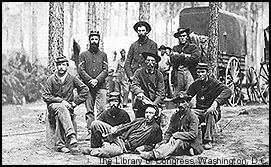

|
The proud---and the doomed?
Civil War soldiers by Mathew Brady
|
|
 |
| Perfect for the realist. Riveting photographs of the American Civil War taken by Mathew Brady and his 20 assistants show the horror of the battlefield as well as the humanity of the soldiers. Brady processed his film using a method that required an enormous amount of equipment. His photographic van appears at the right in this picture. |